SUSPENSION CONTROL SYSTEM (w/ KDSS) > BLEEDING |
| 1. BLEED AIR FROM SUSPENSION FLUID |
Remove the stabilizer control valve protector (Click here).
Remove the rear stabilizer control tube insulator (Click here).
Remove the stabilizer control tube protector (Click here).
Check the pipe connections and whether or not any hydraulic circuit parts are damaged.
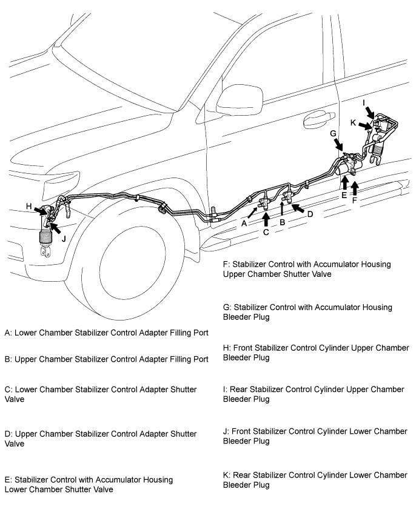
Using a 5 mm socket hexagon wrench, loosen the shutter valves (E, F) of the stabilizer control with accumulator housing 2.0 to 3.5 turns.
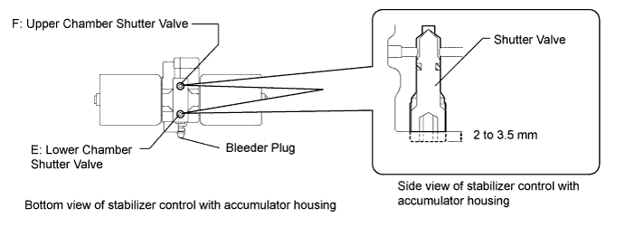
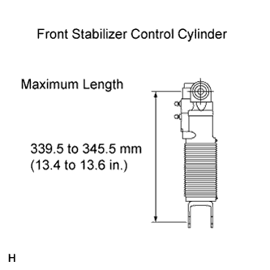 |
Disconnect the front stabilizer control arm and front stabilizer link LH, and set the front stabilizer control cylinder to the maximum length.
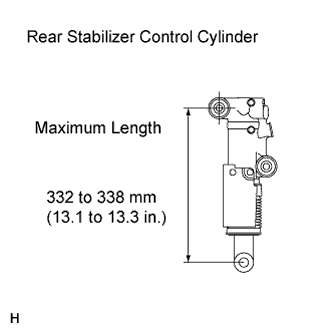 |
Disconnect the rear stabilizer bar and rear stabilizer link, and set the rear stabilizer control cylinder to the maximum length.
Add fluid to SST (high pressure oil pump), and bleed air from the SST hoses.
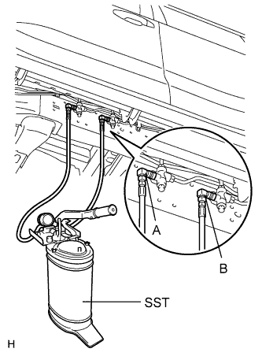 |
Remove the service valve caps of the stabilizer control adapter filling ports (A, B). Then put fluid into SST (high pressure oil pump), and connect SST to the stabilizer control adapter filling ports.
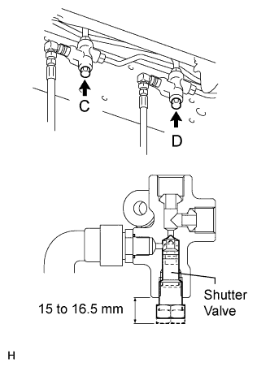 |
Loosen the stabilizer control adapter shutter valves (C, D) 1.5 to 2.5 turns.
Using SST (high pressure oil pump), add fluid.
Pump SST (high pressure oil pump) to add fluid until the pressure reaches 5 MPa (51.0 kgf/cm2, 725 psi).*1
Check for fluid leaks from the pipe connections and hydraulic circuit parts.
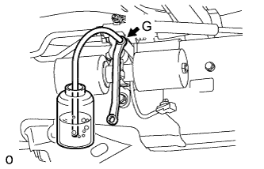 |
Add fluid to the stabilizer control with accumulator housing.*2
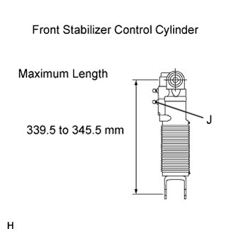 |
Check that the front stabilizer control cylinder is at the maximum length (339.5 to 345.5 mm (13.4 to 13.6 in.)).
Add fluid to the lower chamber of the front stabilizer control cylinder.*3
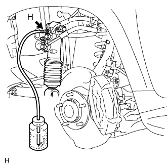 |
Add fluid to the upper chamber of the front stabilizer control cylinder.*4
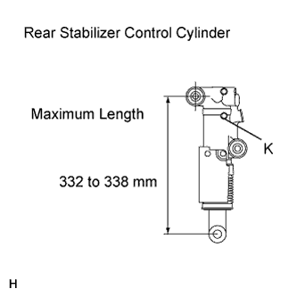 |
Check that the rear stabilizer control cylinder is at the maximum length (332 to 328 mm (13.1 to 13.3 in.)).
Add fluid to the lower chamber of the rear stabilizer control cylinder.*5
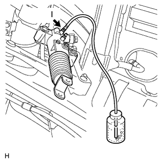 |
Add fluid to the upper chamber of the rear stabilizer control cylinder.*6
Repeat procedures *1 to *6 until the air in the fluid is gone.
Using SST (high pressure oil pump), bleed the air.
Bleed air from the stabilizer control with accumulator housing.
Bleed air from the upper chamber of the front stabilizer control cylinder.
Bleed air from the upper chamber of the rear stabilizer control cylinder.
Bleed air from the lower chamber of the front stabilizer control cylinder.
Bleed air from the lower chamber of the rear stabilizer control cylinder.
Connect the front stabilizer control arm to the front stabilizer link LH and the rear stabilizer bar to the rear stabilizer link.
With all wheels on the ground, apply the specified amount of pressure using SST. Maintain this pressure for 2 to 3 minutes to stabilize the pressure.
| Condition | Specified Pressure |
| Fluid temperature is 20°C (68°F) | 2.8 to 3 MPa (28.6 to 30.6 kgf/cm2, 406 to 435 psi) |
Tighten the shutter valves (C, D) of the stabilizer control adapter.
Remove SST (high pressure oil pump) from the stabilizer control adapter (A, B).
Install the service valve caps to the stabilizer control adapter.
With all wheels on the ground, check that the difference in height between the left and right side of the vehicle is within 15 mm (0.591 in.).
With all wheels on the ground, tighten the shutter valves (E, F) of the stabilizer control with accumulator housing with a 5 mm socket hexagon wrench.
Inspect for suspension fluid leak (Click here).
Install the stabilizer control valve protector.
Install the rear stabilizer control tube insulator.
Install the stabilizer control tube protector.
| 2. TEMPERATURE MANAGEMENT CHART WHEN FILLING FLUID |
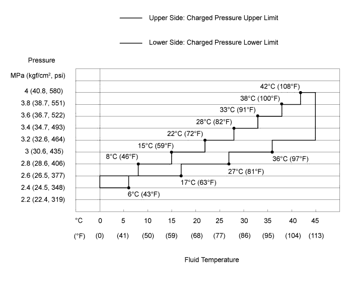